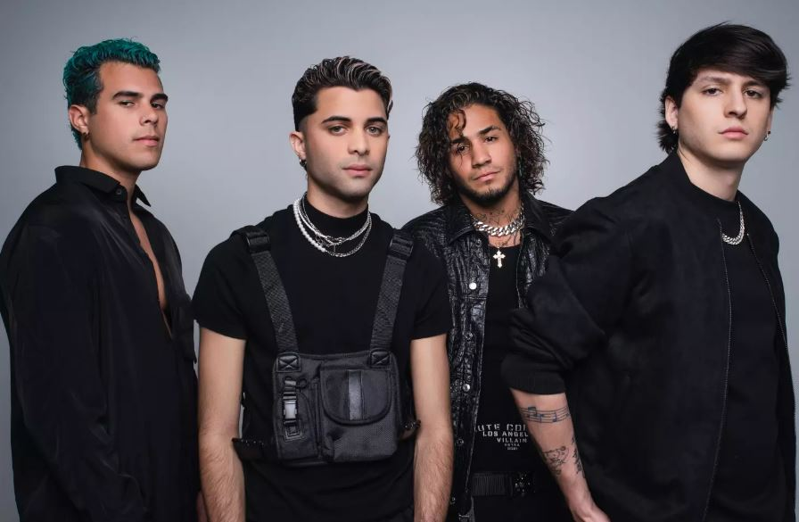

CNCO
Esto es para siempre
La mejor boyband latina de la historia

En diciembre de 2015, se formó la banda que sería una de las más populares en su género: CNCO (se le en inglés: si en si ou). Se formó luego de la participación de los chicos en el reality “La Banda”, emitido por la cadena Univisión.
- Christopher Velez (Ecuador)
- Zabdiel de Jesús (Puerto Rico)
- Richard Camacho (Republica Dominicana)
- Erick Brian Colon (Cuba)
- Joel Pimentel (México) - que anunció su separación de la banda el 09 de Mayo de 2021
Sus integrantes:
Los miembros de CNCO fueron elegidos por el público y por los jueces: Ricky Martin, Laura Pausini y Alejandro Sanz. La formación final se dio a conocer el 13 de diciembre de 2015. El premio fue la firma de contrato con Sony Music Latin, Wisin fue el productor de su primer disco y Ricky Martin fue su representante artístico. Después el management pasó a WK Entertainment (y ya sabemos como terminó la historia con estos últimos).
#Dato: Reggaetón Lento (Bailemos) es una de las canciones más famosas de CNCO. De hecho, el video oficial fue el primero de una boyband en lograr más de mil millones de vistas en YouTube.
El 21 de julio de 2022, durante la ceremonia de los Premios Juventud, después de recibir el premio a Mejor Fandom (algunas todavía tenemos trauma con los premios) anunciaron la separación definitiva de la agrupación, un último álbum y su Farewell Tour.
El 17 de noviembre de 2023 fue el concierto final de CNCO como banda.